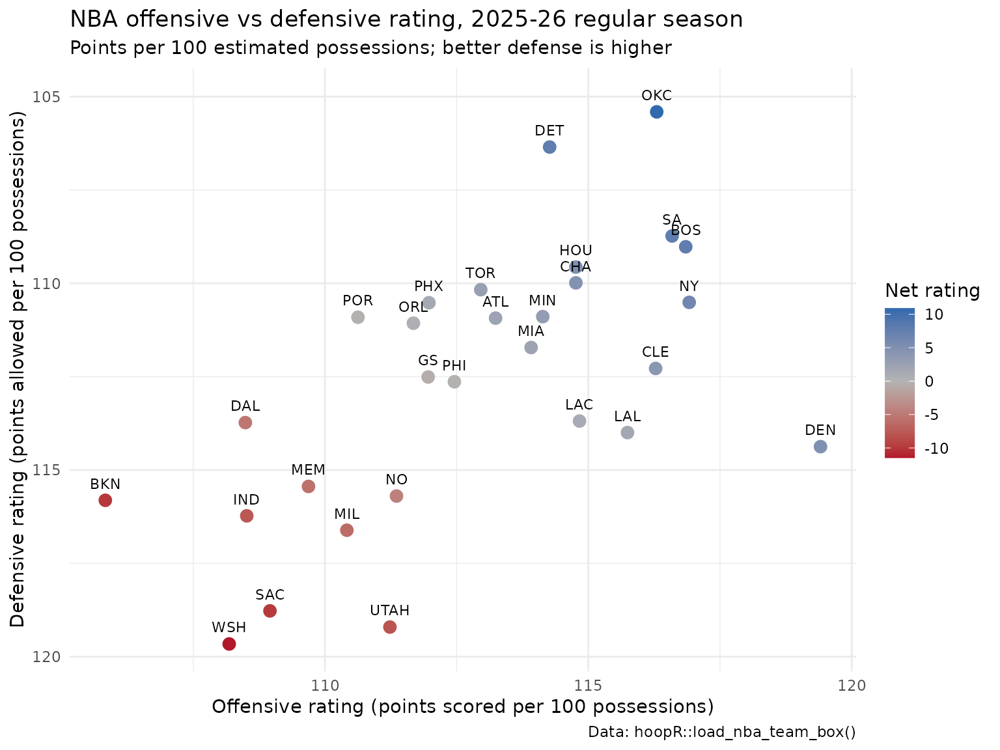

Getting Started with hoopR: NBA and College Basketball Data in R
Saiem Gilani


Source: vignettes/getting-started-hoopR.Rmd
getting-started-hoopR.RmdWelcome folks,
I’m Saiem Gilani, one of the authors of hoopR, and I
hope to give the community a high-quality resource for accessing men’s
basketball data for statistical analysis, basketball research, and more.
This guide is written for students and newcomers: it assumes no prior R
or basketball-analytics experience, and it ends with your first
chart.
What you’ll learn
- How to install R, RStudio and the
hoopRpackage. - How
hoopRis organized: what each function prefix (load_nba_*,espn_mbb_*,nba_*,kp_*, …) means and where its data comes from. - How seasons are counted, and why that matters when you load data.
- How to load one season of NBA team box scores and play-by-play,
compute possessions and efficiency ratings, and draw a first
ggplot2chart. - The basketball-analytics vocabulary you will meet in the rest of the documentation (possessions, pace, offensive rating, four factors, RAPM, …).
- Where to find every function and article.
How do I install R and RStudio?
- Head to https://cran.r-project.org
- Select the appropriate link for your operating system (Windows, Mac OS X, or Linux)
- Windows - Select base and download the most recent version
- Mac OS X - Select Latest Release, but check to make sure your OS is the correct version. Look through Binaries for Legacy OS X Systems if you are on an older release
- Linux - Select the appropriate distro and follow the installation instructions
- Head to posit.co
- Follow the associated download and installation instructions for RStudio.
- Start peering over the RStudio IDE Cheatsheet. An IDE is an integrated development environment.
- For Windows users: I recommend you install Rtools. This is not an R package! It is “a collection of resources for building packages for R under Microsoft Windows, or for building R itself”. Go to https://cran.r-project.org/bin/windows/Rtools/ and follow the directions for installation.
How do I install hoopR?
hoopR is on CRAN, and the development version lives on
GitHub. Either works for this guide.
# The released version from CRAN
install.packages("hoopR")
# Or the development version from GitHub, using the pak package
if (!requireNamespace("pak", quietly = TRUE)) {
install.packages("pak")
}
pak::pak("sportsdataverse/hoopR", dependencies = TRUE, update = TRUE)
# The examples in this guide also use dplyr and ggplot2
install.packages(c("dplyr", "ggplot2"))Then load the packages at the top of every script:
How is hoopR organized? Function prefixes and data sources
hoopR version 3.2.0 exports 1324 functions. That sounds
like a lot, but the prefix of a function name tells you
where its data comes from, so you only need to learn a dozen
patterns.
| Prefix | Source | What you get | Notes |
|---|---|---|---|
load_nba_*(), load_mbb_*()
|
SportsDataverse data releases built from ESPN | Season files: play-by-play, team and player box scores, schedules, shots, rosters, standings | Fast, no rate limits. NBA from 2002, men’s college from 2003/2006. |
load_nba_stats_*() |
Data releases built from the NBA Stats API | Possessions with lineups, shots in the NBA Stats frame, lineups, game logs, season stats | Takes the season start year (see below). |
load_ncaa_mbb_*() |
Data releases built from stats.ncaa.org | NCAA play-by-play, shots, lineups, 10-man stints, possessions, RAPM | Uses stats.ncaa.org ids. |
load_nba_player_impact(),
load_mbb_ratings(),
load_mbb_player_value()
|
Model datasets published by the SportsDataverse | Player impact (RAPM, BPM, WAR), team ratings, player box plus-minus | See the model articles below. |
espn_nba_*(), espn_mbb_*()
|
ESPN’s live APIs | Scoreboards, game summaries, play-by-play, rankings, standings, team and player stats | 105 NBA and 94 college functions. |
nba_*() |
The NBA Stats API (stats.nba.com) and other NBA.com sources | Every NBA Stats endpoint: box scores, tracking, shot charts, lineups, draft, play-by-play | 199 functions; slow and sometimes blocked from cloud servers. |
nbagl_*() |
NBA G League Stats API | G League schedules and stats | 6 functions. |
kp_*() |
KenPom.com | Efficiency ratings, four factors, team and player pages | Requires a paid KenPom subscription. |
cbbd_*() |
CollegeBasketballData.com | Games, lines, ratings, plays, lineups | Free API key, stored in the CBBD_API_KEY environment
variable (how to
register). |
torvik_*() |
Bart Torvik (T-Rank) | T-Rank ratings, game and player data | 6 functions. |
ncaa_mbb_*() |
stats.ncaa.org (live) | Team and player stats, play-by-play | Use the load_ncaa_mbb_*() releases when you can. |
bref_*(), fox_*(),
realgm_*()
|
Basketball-Reference, Fox Sports, RealGM | Historical tables, odds, rosters |
realgm_*() needs the chromote package and Chrome. |
euroleague_*(), fiba_*(),
acb_*(), nbl_rosetta_*(), … |
EuroLeague, FIBA and about forty other leagues and competitions | Schedules, play-by-play, box scores, shots | See the international leagues guide. |
nba_true_shooting_pct(),
nba_possessions(), nba_four_factors(), … |
Your own data (no network) | Efficiency formulas and box-score helpers | Work on NBA and college box scores alike. |
Release data or live APIs: which should I use?
The load_*() functions download files that the
SportsDataverse rebuilds and publishes on its sportsdataverse-data
releases. They are the fastest and most reliable way to get a full
season, and they are what every evaluated example on this site uses. The
live functions (espn_*(), nba_*(),
kp_*(), …) call the source website directly: use them for
today’s games, for endpoints that have no release file, or for a single
game you need right now. Live sources can change, rate-limit you or
block cloud servers, so keep live calls small and cache what you
download.
How does hoopR count seasons?
A basketball season spans two calendar years. hoopR
names a season by the year it ends: the 2025-26 NBA
season is 2026. The helpers
most_recent_nba_season() and
most_recent_mbb_season() return the current season’s end
year (this guide was built when they returned 2027 and 2027).
The one exception is the load_nba_stats_*() family,
which follows the NBA Stats API and takes the season’s
start year:
load_nba_stats_possessions(2025) returns the 2025-26
season. Its helper is most_recent_nba_stats_season(). When
in doubt, look at the season column of what came back.
Worked example: which NBA teams were most efficient in 2025-26?
This is the whole workflow in miniature: load a season, clean it, compute a metric, and plot it.
Step 1: load one season of team box scores
load_nba_team_box() returns one row per team per
game.
season <- 2026
nba_team_box <- load_nba_team_box(seasons = season)
dim(nba_team_box)## [1] 2652 59
nba_team_box |>
select(game_id, game_date, season_type, team_abbreviation, team_score,
field_goals_attempted, free_throws_attempted, offensive_rebounds,
total_turnovers, opponent_team_abbreviation, opponent_team_score) |>
head()## # A tibble: 6 × 11
## game_id game_date season_type team_abbreviation team_score
## <int> <date> <int> <chr> <int>
## 1 401859967 2026-06-13 3 NY 94
## 2 401859967 2026-06-13 3 SA 90
## 3 401859966 2026-06-10 3 SA 106
## 4 401859966 2026-06-10 3 NY 107
## 5 401859965 2026-06-08 3 SA 115
## 6 401859965 2026-06-08 3 NY 111
## # ℹ 6 more variables: field_goals_attempted <int>, free_throws_attempted <int>,
## # offensive_rebounds <int>, total_turnovers <int>,
## # opponent_team_abbreviation <chr>, opponent_team_score <int>season_type is ESPN’s code: 2 is the
regular season and 3 the playoffs. We keep the regular
season so teams are compared over a similar schedule. Always check what
you filtered: ESPN’s regular-season file also holds the All-Star
exhibition games, played by teams that are not NBA franchises.
nba_team_box |>
filter(season_type == 2) |>
count(team_display_name, name = "games") |>
arrange(games) |>
head(5)## # A tibble: 5 × 2
## team_display_name games
## <chr> <int>
## 1 World 2
## 2 Team Stars 3
## 3 Team Stripes 3
## 4 Atlanta Hawks 82
## 5 Boston Celtics 82Keeping teams with at least 41 games (half a season) leaves the 30 franchises:
regular <- nba_team_box |>
filter(season_type == 2) |>
add_count(team_id, name = "team_games") |>
filter(team_games >= 41)
n_distinct(regular$team_id)## [1] 30Step 2: estimate possessions and efficiency
Raw points per game reward teams that play fast. Analysts compare
teams per possession instead. A possession is
one team’s turn with the ball; it ends with a made basket, a defensive
rebound, a turnover or the end of a period. Box scores do not count
possessions directly, so we estimate them with
nba_possessions():
possessions = FGA + 0.44 * FTA - OREB + TOV
The 0.44 converts free-throw attempts into the share of possessions they end (two-shot fouls, and-ones and technicals make this less than 0.5). Offensive rating (ORtg) is points scored per 100 possessions, defensive rating (DRtg) is points allowed per 100 possessions, and net rating is the difference.
team_ratings <- regular |>
mutate(
poss = nba_possessions(
fga = field_goals_attempted, fta = free_throws_attempted,
oreb = offensive_rebounds, tov = total_turnovers
)
) |>
group_by(team_abbreviation, team_display_name) |>
summarise(
games = n(),
poss = sum(poss),
pts = sum(team_score),
opp_pts = sum(opponent_team_score),
.groups = "drop"
) |>
mutate(
ortg = nba_offensive_rating(pts, poss),
drtg = nba_defensive_rating(opp_pts, poss),
net = nba_net_rating(ortg, drtg)
) |>
arrange(desc(net))
team_ratings |>
select(team_display_name, games, ortg, drtg, net) |>
mutate(across(c(ortg, drtg, net), \(x) round(x, 1))) |>
head(10)## # A tibble: 10 × 5
## team_display_name games ortg drtg net
## <chr> <int> <dbl> <dbl> <dbl>
## 1 Oklahoma City Thunder 82 116. 105. 10.9
## 2 Detroit Pistons 82 114. 106. 7.9
## 3 San Antonio Spurs 83 117. 109. 7.9
## 4 Boston Celtics 82 117. 109 7.8
## 5 New York Knicks 83 117. 110. 6.4
## 6 Houston Rockets 82 115. 110. 5.2
## 7 Denver Nuggets 82 119. 114. 5
## 8 Charlotte Hornets 82 115. 110 4.8
## 9 Cleveland Cavaliers 82 116. 112. 4
## 10 Minnesota Timberwolves 82 114. 111. 3.2The Oklahoma City Thunder led the league with a net rating of +10.9 points per 100 possessions. (We used each team’s own possession estimate for both ratings; the advanced metrics article shows the two-team version.)
Step 3: your first ggplot2 chart
Plot offense against defense. The defensive axis is reversed so the best teams land in the top-right corner.
ggplot(team_ratings, aes(x = ortg, y = drtg)) +
geom_hline(yintercept = mean(team_ratings$drtg), linetype = "dashed", colour = "grey60") +
geom_vline(xintercept = mean(team_ratings$ortg), linetype = "dashed", colour = "grey60") +
geom_point(aes(colour = net), size = 3) +
geom_text(aes(label = team_abbreviation), nudge_y = 0.45, size = 3) +
scale_y_reverse() +
scale_colour_gradient2(low = "#B2182B", mid = "grey70", high = "#2166AC", name = "Net rating") +
labs(
title = "NBA offensive vs defensive rating, 2025-26 regular season",
subtitle = "Points per 100 estimated possessions; better defense is higher",
x = "Offensive rating (points scored per 100 possessions)",
y = "Defensive rating (points allowed per 100 possessions)",
caption = "Data: hoopR::load_nba_team_box()"
) +
theme_minimal()
Step 4: go one level deeper with play-by-play
Box scores summarize a game; play-by-play (pbp) lists every event.
load_nba_pbp() returns one row per play with the score,
clock, players involved and, for shots, court coordinates.
nba_pbp <- load_nba_pbp(seasons = season)
dim(nba_pbp)## [1] 642472 68## # A tibble: 10 × 2
## type_text n
## <chr> <int>
## 1 Defensive Rebound 85775
## 2 Substitution 76521
## 3 Jump Shot 64451
## 4 Offensive Rebound 43975
## 5 Pullup Jump Shot 25696
## 6 Shooting Foul 25633
## 7 Free Throw - 1 of 2 23626
## 8 Free Throw - 2 of 2 23603
## 9 Driving Layup Shot 19826
## 10 Personal Foul 14830For example, the share of field-goal attempts that were three-pointers in each quarter of regulation:
nba_pbp |>
filter(season_type == 2, shooting_play, period_number <= 4,
!grepl("Free Throw", type_text)) |>
group_by(period_number) |>
summarise(fga = n(), three_share = mean(points_attempted == 3)) |>
mutate(three_share = round(three_share, 3))## # A tibble: 4 × 3
## period_number fga three_share
## <int> <int> <dbl>
## 1 1 57445 0.423
## 2 2 55201 0.415
## 3 3 54739 0.415
## 4 4 52066 0.418The same calls work for college basketball: swap in
load_mbb_team_box(), load_mbb_player_box() and
load_mbb_pbp(). A college game is 40 minutes, so college
pace is usually quoted per 40 minutes rather than per 48.
Basketball analytics glossary
Terms used across the hoopR documentation, with the
helper that computes each one where there is one.
| Term | Meaning |
|---|---|
| Box score | Per-game totals for each team or player: points, field goals, rebounds, assists, turnovers, fouls, minutes. |
| Play-by-play (pbp) | One row per game event (shot, rebound, foul, substitution, timeout) with clock and score. |
| FGA, FGM, 3PA, FTA, OREB, DREB, TOV | Field-goal attempts and makes, three-point attempts, free-throw attempts, offensive and defensive rebounds, turnovers. |
| Possession | One team’s turn with the ball, ending with a made shot, defensive
rebound, turnover or end of period. Estimated by
nba_possessions():
FGA + 0.44 * FTA - OREB + TOV. |
| Pace | Possessions per 48 minutes (NBA) or per 40 minutes (college).
nba_pace() uses 48. |
| Offensive rating (ORtg) | Points scored per 100 possessions:
nba_offensive_rating(). |
| Defensive rating (DRtg) | Points allowed per 100 possessions:
nba_defensive_rating(). Lower is better. |
| Net rating | ORtg minus DRtg: nba_net_rating(). |
| Adjusted efficiency | Ratings corrected for opponent strength, as in KenPom or
load_mbb_ratings() (adj_o, adj_d,
adj_em). |
| eFG% | Effective field-goal percentage,
(FGM + 0.5 * 3PM) / FGA, crediting threes for their extra
point: nba_effective_fg_pct(). |
| TS% | True shooting percentage, points per shooting possession,
PTS / (2 * (FGA + 0.44 * FTA)):
nba_true_shooting_pct(). |
| FT rate | Free throws relative to field-goal attempts:
nba_ft_rate() uses FTA / FGA; the four-factors
version uses FTM / FGA. |
| TOV% | Turnovers per 100 plays,
100 * TOV / (FGA + 0.44 * FTA + TOV):
nba_turnover_pct(). |
| OREB% | Share of available offensive rebounds a team grabbed,
100 * OREB / (OREB + opponent DREB):
nba_oreb_pct(). |
| Four factors | Dean Oliver’s four drivers of winning: shooting (eFG%), turnovers
(TOV%), rebounding (OREB%) and free throws (FT rate).
nba_four_factors() returns all four. |
| Usage rate | Share of team plays a player used while on the floor:
nba_usage_rate(). |
| Per-36 / per-100 | Counting stats scaled to 36 minutes or 100 possessions so players
with different playing time compare fairly:
nba_per_minutes(), nba_per_possessions(). |
| Plus/minus | Point differential while a player was on the court
(plus_minus in the NBA player box). Heavily influenced by
teammates and opponents. |
| Stint | A stretch of play during which the same ten players are on the
court. load_ncaa_mbb_matchup_stints() returns college
stints. |
| Lineup | A specific group of five teammates on the court together. |
| Garbage time | Late minutes of a lopsided game, when results are decided and
benches play; often filtered out of analyses
(is_garbage_time in
load_ncaa_mbb_possessions()). |
| APM / RAPM | Adjusted plus-minus: a regression that credits each player for possession outcomes while controlling for the other nine players on the court. Regularized APM (RAPM) adds a ridge penalty that shrinks noisy estimates toward zero. See the RAPM model article. |
| BPM / SPM | Box (or statistical) plus-minus: a regression that estimates a player’s impact from box-score statistics alone. |
| WAR | Wins above replacement: a player’s value in wins relative to a freely available replacement player. |
| Win probability (WP) | The chance a team wins given the current game state (score, time,
possession): home_win_prob in
load_mbb_pbp(). |
Where are the functions? The reference index by section
The function reference groups every exported function by source. Jump straight to a section:
-
hoopR Data: every
load_*()release loader, including the NBA Stats API loaders, the NCAA engine loaders and the model dataset loaders. - Cross-Source Crosswalks: join ESPN, NBA Stats, KenPom, Torvik and Fox ids.
-
ESPN Data:
espn_mbb_*(),espn_nba_*()andfox_*(). - NBA Data: the NBA Stats API, the G League and the basketball analytics utilities.
- NCAA Data, KenPom Data, CollegeBasketballData (CBD) and Bart Torvik (T-Rank).
- Injury Reports, Officiating and Basketball-Reference.
- Euroleague Data and International Basketball.
- Salary & Mock Draft Sources, RealGM and Helper Functions and Data.
Good first function pages (each name links to its reference page):
load_nba_pbp(), load_mbb_pbp(),
load_nba_team_box(), load_nba_shots(),
espn_mbb_scoreboard() and
nba_four_factors().
Articles and guides
Data guides:
- ESPN endpoints: live ESPN scoreboards, game summaries and play-by-play for the NBA and college.
- NBA cookbook and men’s college basketball cookbook: short recipes for common questions.
-
NBA Stats API parameter
descriptions: what each
nba_*()argument means. - KenPom example functions and CollegeBasketballData (CBD) endpoints.
- International basketball leagues: EuroLeague, FIBA and about forty more leagues and competitions.
Analysis guides:
- Shot charts and court plots with sportyR and sdvplotR.
- Basketball advanced metrics: possessions, pace, ratings, four factors, usage and true shooting.
Model write-ups:
- NBA player impact model: RAPM, SPM, BPM, DARKO-style projections and WAR.
-
College basketball RAPM
model, including fitting your own RAPM with
nba_rapm(). - College basketball team ratings model.
- College basketball player value model.
- College basketball win probability model.
Where to go next
- Repeat the worked example for college:
load_mbb_team_box(2026)and the samenba_possessions()code. - Read the advanced metrics article to compute the four factors, usage and true shooting for every team and player.
- Draw a shot chart for your favorite player.
- Explore player value with
load_nba_player_impact()or college RAPM. - Ask questions and share what you build: open an issue on GitHub.
Our Authors
Our Contributors
-
Jason Lee
- Billy Fryer
-
Ross Drucker
-
Vladislav Shufinskiy
Related SportsDataverse packages
- cfbfastR - college football
- hoopR - men’s basketball
- wehoop - women’s basketball
- baseballr - baseball
- fastRhockey - hockey
- oddsapiR - betting odds
- sportyR - playing surfaces (2.4.5 on CRAN: NBA, NCAA and FIBA courts for plotting shot locations)
-
sdvplotR
- team logos and colours for
ggplot2, and shot charts from thehoopRshot loaders (0.3.0,pak::pak("sportsdataverse/sdvplotR"); see its NBA, men’s college and shot chart articles) - sportsdataverse-py - the Python package
- sportsdataverse-R - the R meta-package